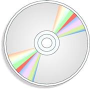

CD-ROMs and DVDs have become a standard storage option in today's computing world because they are inexpensive and easy to use.
To read from a CD or DVD, you only need a standard CD-ROM drive, but to create CDs or DVDs, you need a DVD burner (all DVD burners can read and write CDs as well).